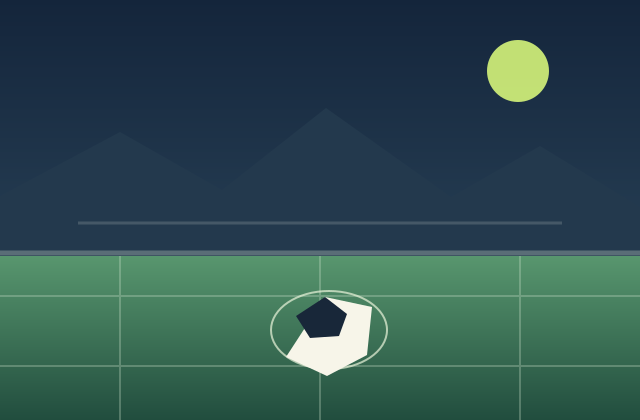
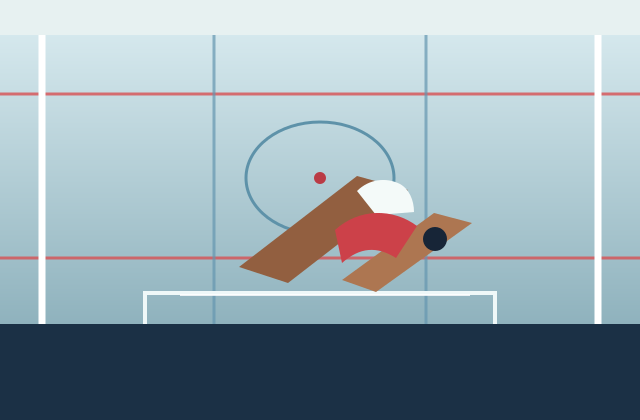
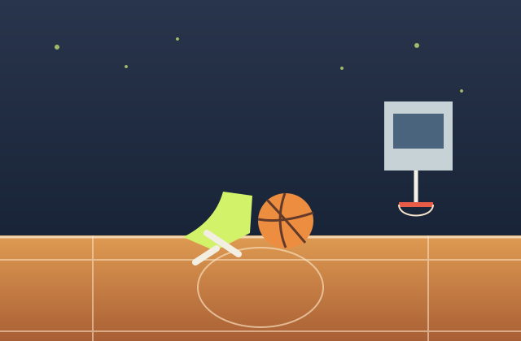

01
Fotbal
Ligové příběhy, taktika a evropské večery, kdy rozhoduje každý gól.
Osobní stránka · sport a digitální projekty
Baví mě sport, přehledná data a weby, které se snadno používají. Tohle je moje místo pro oblíbené sportovní světy a malé digitální projekty.
Poznej moje zájmyJsem Kryštof Dopita. Zajímám se o sport a o to, jak informace podat jednoduše a srozumitelně. Proto mě baví spojovat výsledky, tabulky a dění v týmech do přehledu, ve kterém se člověk rychle zorientuje.
Na této stránce najdeš témata, ke kterým se rád vracím, i můj sportovní přehled, který jsem vytvořil jako webový projekt.
Od velkých evropských večerů až po rychlé tempo zámořských soutěží.

Ligové příběhy, taktika a evropské večery, kdy rozhoduje každý gól.

Rychlá týmová hra, česká extraliga a vypjaté souboje o každý bod.

NBA, výrazné individuální výkony a zápasy plné zvratů až do konce.
Každý přináší jiné tempo, atmosféru i příběhy.
| Sport | Soutěž | Co mě na ní baví |
|---|---|---|
| Fotbal | UEFA Champions League | Velké evropské zápasy a taktické souboje |
| Hokej | Tipsport extraliga | Rychlost hry a atmosféra na tribunách |
| Basketbal | NBA | Individuální výkony a napínavé koncovky |
Ozvi se mi — rád si vyměním tipy na zápasy, projekty i dobré sportovní příběhy.
krystofkolumbus99@gmail.com